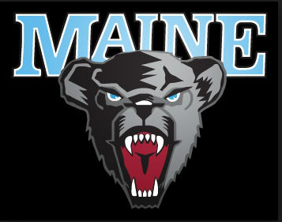
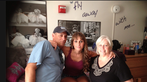
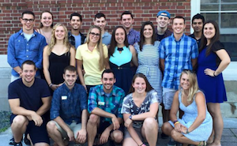

As a high school senior, I visited many college campuses before selecting UMaine. Once I stepped on the UMaine campus, my decision was over. I instantly fell in love with the campus. Aside from its campus and programs, I also liked that it was only two hours away from my hometown. Also, the Orono area has a small town feel but is also very convenient location as it is only minutes away from Bangor. As a freshman at UMaine, I lived in the dorm called Oxford Hall and did not really mind dorm life, so I decided to apply for a Resident Assistant position. While a sophomore, I was a Resident Assistant (RA) in a freshmen dorm called Androscoggin Hall. Having the role of an RA was a very good experience, as it helped me to grow as a person. Life skills, such as being responsible, compassionate, organized, and strong communication skills definitely improved my leadership skills and made me more confident in my abilities. After spending two years in the nursing program at UMaine, I began to have doubts about becoming a nurse. This last fall, I decided to split my semester between business and nursing classes. This experience led me to making the decision to pursue business as a major. It is my career plan to graduate from UMaine with a Bachelor of Science degree in Marketing and possibly Management. Once receiving this degree, I plan to further my education by attaining a Master's Degree in New Media. My lifelong goals includes settling in Maine with my family while working for a company in Marketing and New Media.

Freshmen year move in day Oxford Hall! :)

Sophomore Year Resident Assistant in Androscoggin HallUniversity of Maine Blackbear